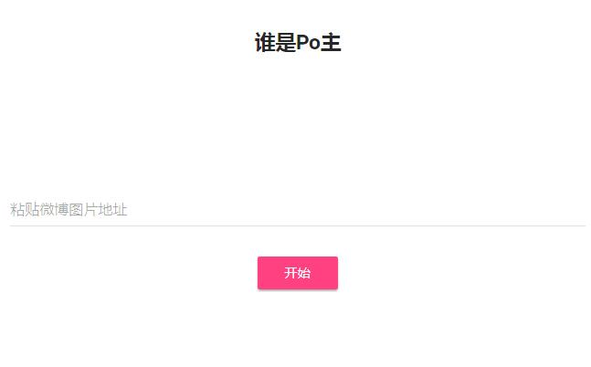

通过新浪微博图片反查上传者信息
新浪微博上传的每一张图片都包含了上传者的微博信息,来源 ：https://www.v2ex.com/t/388152
举例说明
微博的图片链接一般是这样的构成
https://wx1.sinaimg.cn/mw690/e5587f73ly1fi9tuj9lq0j20j60f8jrx.jpg
红色是隐藏微博图片上传者信息的代码，红色代码有两种类型。 一种是005，006开头的，这类代码需要复制前八位 然后用62进制转换获取微博上传者的UID。 另一种前八位需要用16进制转换才可以获取微博上传者的UID。 在https://weibo.com/u/后面加上UID，即是Po主的微博主页。
Demo：https://weibo.dabianhaochi.cn/ 前端使用MDUI
